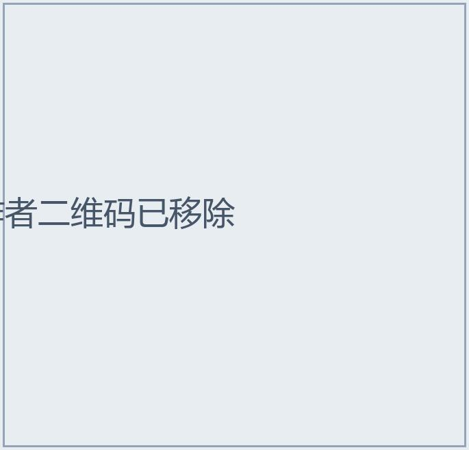

简单
已有题库 · 现成可用
课内基础题，跟着教材进度走，适合日常「看一会儿、答一题」的约定。人教版 1–9 年级上下册共 10800 题，已随 App 内置。
下载码：见下方目录 · 无需付费
下表现成题库按「教材版本 · 年级 · 学期 · 学科 · 等级」整理，人教版 1–9 年级的简单等级已随 App 内置，也能用下载码同步到其它设备。除此之外什么题目都能定制：难度、任意学科、某一单元、某个知识点，甚至孩子最近总错的某一类题，按你的需求出题，完成后给一个专属下载码导入即可。
公开提供的是「简单」等级；其余三个等级按孩子实际情况单独出题。难度只是定制的一个维度——学科、单元、知识点同样可以指定，详见下方「按需定制」。
课内基础题，跟着教材进度走，适合日常「看一会儿、答一题」的约定。人教版 1–9 年级上下册共 10800 题，已随 App 内置。
在课内基础上增加变式与一步转换，适合已经能稳定答对基础题、想再多想一下的孩子。
综合应用与多步推理题，一个题干里串起多个知识点，适合学有余力、需要一点挑战的阶段。
拔高与竞赛风格的题目，题量不大但每题都要拐几个弯，建议家长陪着一起看解析。
下表中列出的都是当前已经存在、可以直接使用的题库，等级统一为简单。除此之外没有现成下载码的题，都可以找作者定制：不只是中等 / 偏难 / 难，任意学科、某一单元、某个知识点，或任何你想要的题目都能做；定制完成给一个专属下载码，在 App 里输入即可下载导入。看定制范围
每套含数学、语文、英语各 200 题，共 600 题；覆盖 216 个知识点、16 个大类。下载码即文件名，短码方便在电视上用遥控器输入。
| 教材版本 | 年级 | 学期 | 学科 | 等级 | 下载码 |
|---|---|---|---|---|---|
| 人教版 | 1 年级 | 上册 | 数学 · 语文 · 英语 | 简单 | s1a |
| 人教版 | 1 年级 | 下册 | 数学 · 语文 · 英语 | 简单 | s1b |
| 人教版 | 2 年级 | 上册 | 数学 · 语文 · 英语 | 简单 | s2a |
| 人教版 | 2 年级 | 下册 | 数学 · 语文 · 英语 | 简单 | s2b |
| 人教版 | 3 年级 | 上册 | 数学 · 语文 · 英语 | 简单 | s3a |
| 人教版 | 3 年级 | 下册 | 数学 · 语文 · 英语 | 简单 | s3b |
| 人教版 | 4 年级 | 上册 | 数学 · 语文 · 英语 | 简单 | s4a |
| 人教版 | 4 年级 | 下册 | 数学 · 语文 · 英语 | 简单 | s4b |
| 人教版 | 5 年级 | 上册 | 数学 · 语文 · 英语 | 简单 | s5a |
| 人教版 | 5 年级 | 下册 | 数学 · 语文 · 英语 | 简单 | s5b |
| 人教版 | 6 年级 | 上册 | 数学 · 语文 · 英语 | 简单 | s6a |
| 人教版 | 6 年级 | 下册 | 数学 · 语文 · 英语 | 简单 | s6b |
| 人教版 | 7 年级 | 上册 | 数学 · 语文 · 英语 | 简单 | s7a |
| 人教版 | 7 年级 | 下册 | 数学 · 语文 · 英语 | 简单 | s7b |
| 人教版 | 8 年级 | 上册 | 数学 · 语文 · 英语 | 简单 | s8a |
| 人教版 | 8 年级 | 下册 | 数学 · 语文 · 英语 | 简单 | s8b |
| 人教版 | 9 年级 | 上册 | 数学 · 语文 · 英语 | 简单 | s9a |
| 人教版 | 9 年级 | 下册 | 数学 · 语文 · 英语 | 简单 | s9b |
sample 或 sample-array。
四个难度只是最粗的一种分法。哪一册、哪一单元、哪个知识点、哪一学科，都可以按孩子当下的需要单独出题；语、数、英之外的学科同样能做，需求说清楚就行。
简单 / 中等 / 偏难 / 难四级任选，也可以不套等级，直接按孩子水平描述，比如「比课本稍难一点」。
不限语文、数学、英语：科学、物理、化学、生物、历史、地理、道德与法治等学科，都可以定制。
只练某一册的某一单元、某一章节，或把老师划的期末复习范围整册串起来，题目不超出这个范围。
孩子总错的「分数通分」「因式分解」「时态」这类单点，可以集中出一组题，反复练到会为止。
题量多少、要不要文字解析、句子长短都能指定；成品按 App 的四选一选择题格式整理，方便遥控器作答。
课本页码、老师划的重点、错题照片、家长自己编的题、课外拓展内容，都能整理成一套专属题库。
把范围和需求发给作者 → 确认学科 / 单元 / 知识点与题量 → 出题校对 → 拿到专属下载码 → 在 App 里「下载并导入」。没有固定菜单，什么题目都可以定制；唯一的技术要求是整理成四个选项的选择题，这样才能在电视上用遥控器作答。想定制题库，加作者微信 qiannianyihou8（二维码见下方「想要一套专属题」卡片）。
全程在电视上用遥控器完成；下载需要联网，出题与答题始终在本地。
在 App 首页进「家长设置」→ 最上方「题库信息」卡片，找到右侧「新增题库」区域（左边就是官网二维码，用手机扫一扫可以打开本页）。
在上面的表格里点「复制」，或直接用遥控器输入短码，例如 3 年级上册是 s3a。下载码只含字母、数字，长度 1–64 位。
App 自动按下载码拉取对应的题库文件并写入本机题库，完成后显示成功导入 / 跳过题数。
回到「出题范围」选择对应教材版本、年级、学期即可；定制的是语数英之外的学科时，再到「学科配比 → 其它」把默认的 0 调大才会抽到。重复题会自动跳过，同一码重复导入不会让题目变多。
① 电视要能上网，且能访问 xsd.qx47.com；② 下载码要和表格里完全一致（区分大小写）。下载码对应的题库文件由官网提供，定制题库的码在作者交付后才生效。
不只在四个难度里选：什么题目都可以定制。语数英之外的学科、某一册的某一单元、孩子总错的某个知识点、老师划的复习范围，都可以按你的需求出题，没有固定菜单。联系作者定制，完成后给一个专属下载码，按左边四步导入即可。

添加时备注「学时兑题库定制」+ 孩子年级 / 学科，作者会和你确认范围、难度与题量后出题，完成后交付一个专属下载码。
学时兑是 Android 应用，适配小米、TCL、创维、索尼等主流智能电视，也能装在电视盒子与投影仪上，用原装遥控器就能答题。
小米、TCL、创维、索尼等主流品牌，装好后在电视桌面直接打开，遥控器方向键与数字键 1–4 都能作答。
老电视接上安卓盒子一样能用。已在小米盒子 4（Android 6.0.1，1920×1080）完整跑通答题流程。
带安卓系统的家用投影仪可以直接安装；大字界面与宽松的选项排布，投射到大画面上也看得清。
也能安装调试。系统要求 Android 5.0 及以上，首次运行需允许「显示悬浮窗」权限，家长设置由密码保护。